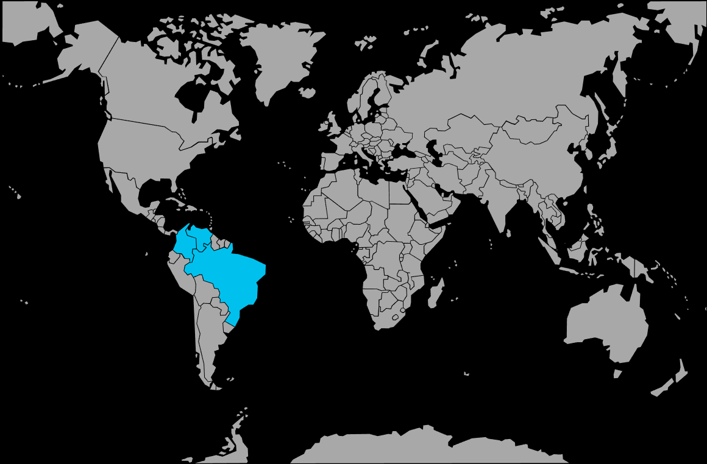

Systématique
- Ordre : Characiformes
- Famille : Characidae
- Genre : Paracheirodon
- Espèce : Paracheirodon simulans
Paracheirodon simulans, souvent appelé néon vert ou faux néon, est un minuscule characidé très proche des néons classique et cardinalis, mais au corps plus élancé et à la bande bleue‑verte plus étendue.
Les adultes mesurent environ 2,5–3,5 cm et évoluent en bancs serrés dans la zone médiane, ce qui en fait un excellent poisson de banc pour les nano‑aquariums plantés acides et très doux.
Espèce grégaire et timide, Paracheirodon simulans doit être maintenu en groupe important (au moins 10–12 individus, idéalement plus) pour se sentir en sécurité et adopter un comportement naturel.
Il apprécie un décor très planté, des racines et des feuilles mortes, avec un éclairage tamisé et peu de remous ; en présence de poissons calmes et de petite taille, il devient plus visible et actif.
Mode : pondeur libre ; comme les autres Paracheirodon, il disperse ses œufs en pleine eau ou au-dessus du substrat, sans soin parental, les adultes mangeant œufs et alevins.
Une reproduction ciblée nécessite un bac spécifique très sombre, une eau extrêmement douce et acide, un léger tapis de mousse ou de plantes fines et le retrait des adultes juste après la ponte, les œufs étant sensibles à la lumière.
Dimorphisme sexuel : très discret ; les femelles matures présentent un abdomen légèrement plus rebondi, alors que les mâles restent plus fins et fuselés.
Espérance de vie : environ 3 à 5 ans en aquarium, avec une eau très propre, adaptée en paramètres et un stress limité.
Paracheirodon simulans est un habitant exclusif des eaux noires des affluents supérieurs de l’Amazone, où l’eau est très acide, presque dépourvue de minéraux, brun foncé à cause des tanins, et coule lentement au milieu d’une forêt dense.
Répartition
Origine naturelle :
- Amérique du Sud : haut bassin du rio Negro au Brésil et bassin supérieur de l’Orénoque en Colombie et au Venezuela.
- Affluents forestiers de type eau noire, petits ruisseaux et bras calmes, souvent éloignés des grands cours d’eau principaux.
Les biotopes sont caractérisés par un courant lent à modéré, un substrat sableux recouvert de feuilles, racines et branches, et une forte couverture végétale riveraine créant une lumière très atténuée.
Paramètres de maintenance
Température : 24 à 28 °C.
pH : 5,0 à 6,5, eau nettement acide.
GH : 1 à 6 °dGH, eau très douce à douce.
Courant : faible à modéré, avec une filtration efficace mais un rejet adouci, sans fort brassage.
Volume conseillé : à partir de 60 L pour un banc, davantage pour un communautaire ou un groupe plus important.
Régime alimentaire
Régime : omnivore à tendance micro‑carnivore ; consomme dans la nature de minuscules invertébrés et du zooplancton, et accepte en aquarium paillettes fines, micro‑granulés, nauplies d’artémias, daphnies et autres nourritures congelées ou vivantes de petite taille.
Une alimentation très variée, distribuée en petites quantités régulières, est importante pour soutenir sa croissance, ses couleurs intenses et sa résistance, surtout dans une eau acide et très douce.